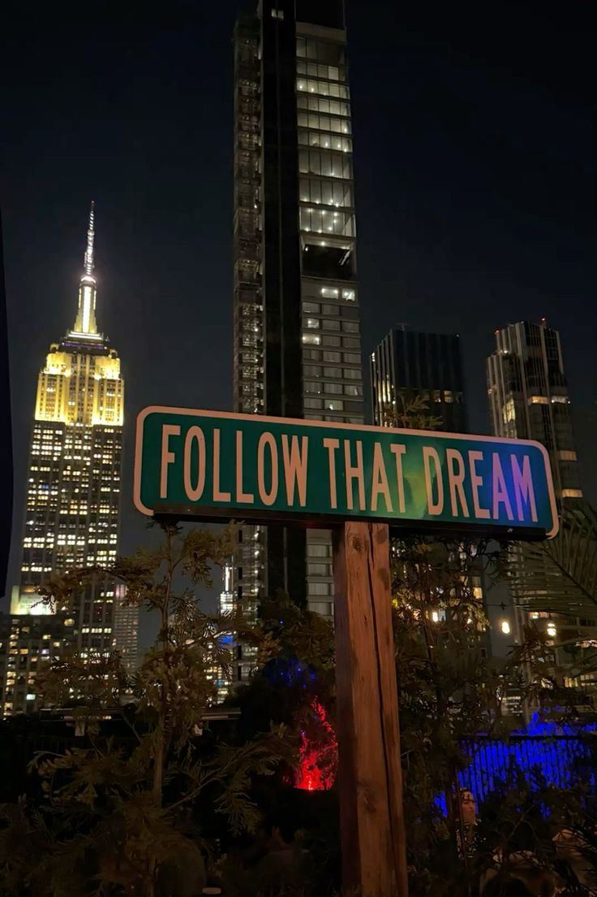
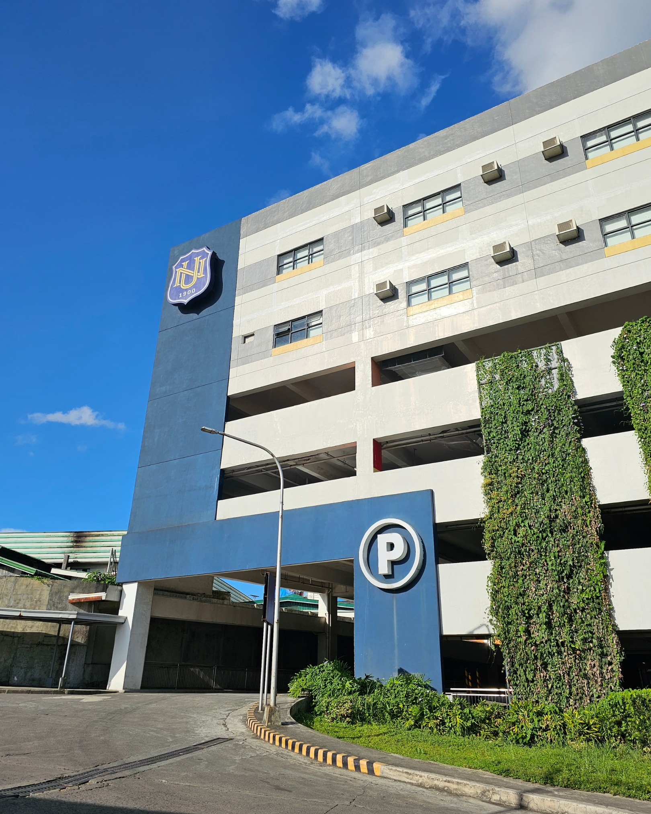
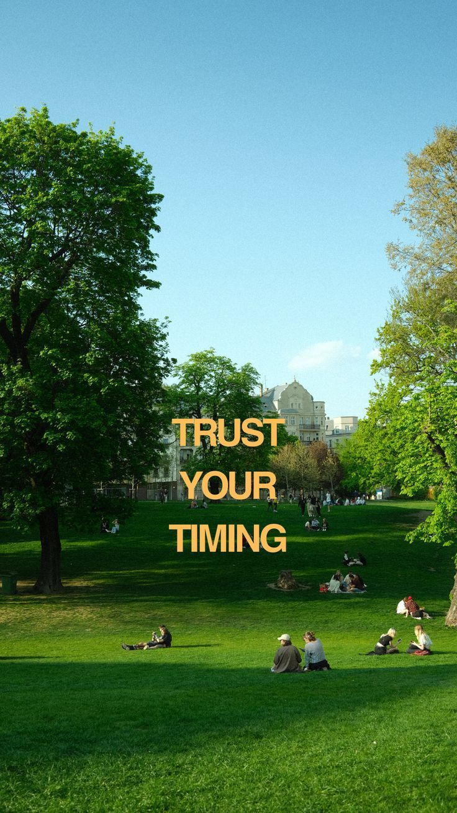
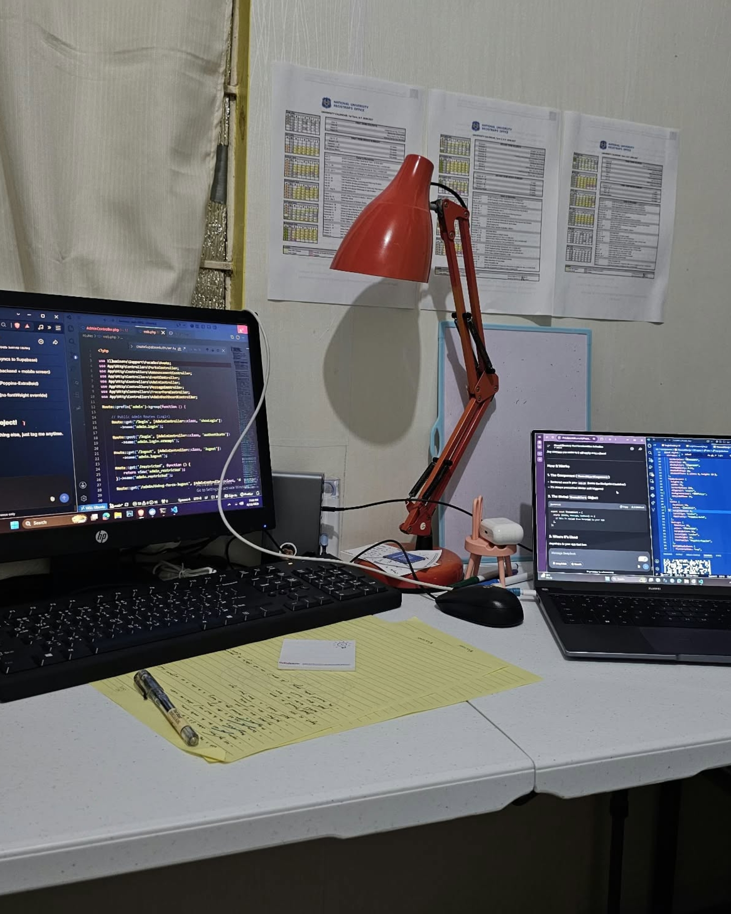
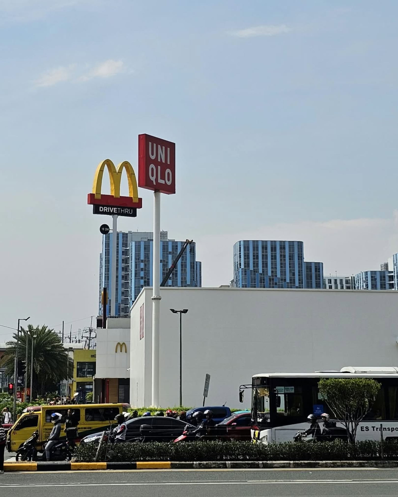

Creative Director
SACE Student Council · NU Lipa
Lead the Creatives Committee in digital media, event publicity, and publication materials.
 @johannescls
@johannescls
Full-stack development, interfaces, and digital products. Clean logic, thoughtful engineering — built on NYC frequency.

Follow that Dream Day 01
uni
Daily Reminder
behind the scenes
the city Manila '26
Hi, I'm Johannes!
I build things that work — then make them mean something.
I'm an Information Technology student at National University Lipa, specializing in Mobile & Web Applications. My work lives between full-stack development, UI/UX, graphic design, and visual storytelling.
From code to campaign layouts, from student leadership to photojournalism — I like finding the human side of a technical problem.
Places where I've learned to turn ideas into something people can see, use, and connect with.
SACE Student Council · NU Lipa
Lead the Creatives Committee in digital media, event publicity, and publication materials.

NU Lipa Marketing Office
Design print and digital materials with Photoshop and Canva, write campaign content, manage multiple deliverables since March 2025.

The Synergy · NU Lipa SACE
Led editorial and photo coverage for IT — event photography, layout production, and story organization.

YES-O · Alangilan Senior High School
Managed organizational communications and social media; supported financial transparency as Auditor.
Where I built my foundations.
BS Information Technology
Specialization in Mobile & Web Applications
STEM · Graduated With Honors
Work Immersion Awardee
The tools and skills I bring to my work.
PHP / Laravel / MySQL / JavaScript / React Native / C# / Java / HTML & CSS
Figma / Photoshop / Canva / Affinity / CapCut
GitHub / Windows Server / Networking / ClickUp / Notion / Google Workspace / Microsoft 365

Selected projects, interfaces, and the thinking that connects them.
Explore my Tech Portfolio ↗
Publication materials, visual identities, and small worlds made by hand.
View Creative Portfolio ↗
Find me online.
Follow along, see what I am building, or connect with me professionally.